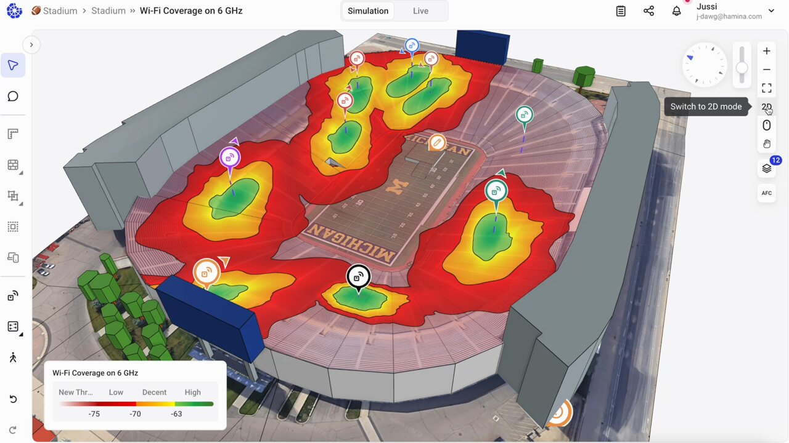
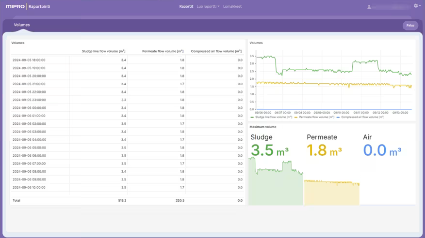
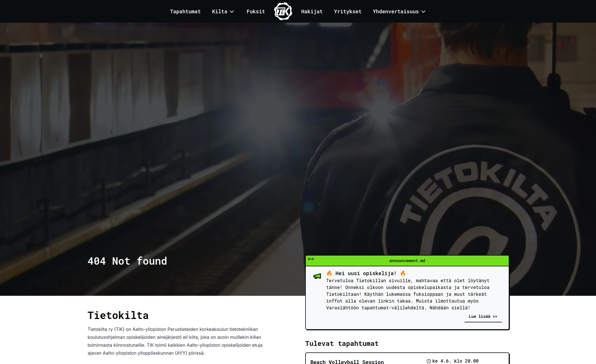

Ohjelmistokehittäjä Hamina Wirelesillä (Tammikuu 2025 – )

Hamina Wireless (https://www.hamina.com) on suomalainen teknologiayritys, joka kehittää langattomien verkkojen
suunnittelu- ja analysointityökaluja. Työskentelen Network Planner
-tuotekehitystiimissä, jossa kehitän ja ylläpidän ominaisuuksia Network
Planner -sovellukseen. Kehityksessä käytän päivittäin erilaisia web- ja
3D-teknologioita.
Ohjelmistosuunnittelija Miprolla (Kesäkuu 2022 – Helmikuu 2025)

Mipro (https://www.mipro.fi) on
suomalainen konsulttiyritys, joka on erikoistunut raideliikenteeseen ja
teollisuusjärjestelmiin. Työskentelin Mipro Core Raportointi -tiimissä,
jossa kehitettiin automaattista raportointijärjestelmää asiakkaille.
- Kehitin full-stack-verkkosovellusta Reactilla ja TypeScriptillä.
-
Loin sovellukselle e2e-testausjärjestelmän Playwrightin ja Jenkinsin
avulla.
-
Kehitin ja ylläpidin web-infrastruktuuria Terraformin ja Kubernetesin
avulla.
-
Toimin yhden kesän tiimimme Scrum Masterina ja olin mukana kehittämässä
tiimimme kehitysprosessia.
-
Työskentelin asiakasrajapinnassa saaden suoraa palautetta ja
kehitysehdotuksia asiakkailta.
Työtodistus
Tietokillan digivastaava (Tammikuu 2024 – Joulukuu 2024)

Tietokilta on Aalto-yliopiston tietotekniikan opiskelijoiden ainejärjestö,
ja toimin vapaaehtoisena vuoden 2024 Tietokillan digitoimikunnan
puheenjohtajana, eli digivastaavana. Digitoimikunnan tehtävä on kehittää ja
ylläpitää Tietokillan IT-infrastruktuuria, ja digivastaava organisoi tätä
toimintaa ja toimii ikään kuin projektipäällikkönä toimikunnan projekteille.
Digivastaavakauteni aikana:
- Jaoin tehtäviä toimikuntalaisille ja ylläpidin projektin tikettejä.
- Järjestin säännöllisiä kokouksia toimikunnan kanssa.
-
Osallistuin projektien ja infran kehitykseen sekä design-päätöksien
tekemiseen.
-
Toimikunta julkaisi killale uudet verkkosivut
https://tietokilta.fi
Vuonna 2024 digitoimikunnassa kehitettiin seuraavia projekteja:
-
Nettisivut, jotka on toteutettu NextJS:n, Payload CMS:n ja MongoDB:n
avulla.
-
Laskun generointijärjestelmä, joka on toteutettu Rustilla ja Typstillä.
-
Tapahtumille ilmoittautumisjärjestelmä, joka on toteutettu TypeScriptin ja
PostgreSQL:n avulla.
-
Killan Azure-web-infrastruktuuri, jota ylläpidetään Terraformin avulla.
Tietokillan projektit ovat julkisia ja niihin pääsee tutustumaan täältä:
https://github.com/Tietokilta
Kurssiassistentti Aalto-yliopistossa (Kesäkuu 2023 – Joulukuu 2023)
Olen toiminut kurssiassistenttina seuraavilla kursseilla:
-
Data Structures and Algorithms (Elokuu 2023 - Joulukuu 2023)
-
Autoin opiskelijoita harjoituksissa suomeksi, ruotsiksi ja
englanniksi.
-
Programming Parallel Computers, Kurssin kehitystyö (Kesäkuu 2023 - Elokuu
2023)
- Kehitin kurssin alustan Pythonilla ja Flaskilla.
- Testasin ja arvioin kurssialustan skaalautuvuutta.
Tietojärjestelmien ylläpitäjä Päivölässä (Toukokuu 2021 – Elokuu 2023)
Työskentelen välillä vapaaehtoisesti Päivölän opistossa tietojärjestelmien
ylläpitäjänä (https://paivola.fi).
Tehtäviini on kuulunut muun muassa koulun pilvi-infrastruktuurin ylläpito
Ansiblen avulla ja käyttäjätilien hallinta LDAP:n ja Keycloakin avulla. Olen
myös asentanut fyysisiä laitteistoja, kuten verkkokytkimiä ja
yhteyspisteitä, ja kehittänyt koulun sisäistä verkkosivustoa Reactilla ja
TypeScriptillä.
Ohjelmistokehittäjä PSIL:llä (Elokuu 2020 – Kesäkuu 2022)

Päivölä Student Innovation Lab (https://psil.fi) on Päivölän matematiikkalinjan opiskelijoiden työpaikka. Olen
osallistunut seuraaviin projekteihin PSIL:llä:
-
Shakkikameraprojekti (Elokuu 2020 - Toukokuu 2021)
-
Toteutin tietojen lähettämisen web-kamera-clientiltä palvelimelle
Javalla käyttäen WebSocketteja.
-
Olin osana kehittämässä back-end-palvelinsovellusta, johon
tallennettiin web-kamera-clienttien lhettämiä shakkipelejä
Javascriptin avulla.
-
Tein debuggausikkunan web-kamera-clientin asetusten muuttamista varten
Javalla.
-
Perintätoimistoprojekti (Helmikuu 2021 - Tammikuu 2022)
-
Tein pythonilla web scraping -skriptin, joka keräsi tiettyjen
yritysten yhteystiedot.
-
Suunnittelin ja ohjelmoin Reactin ja TypeScriptin avulla
verkkosivuston, jolla hallinnoitiin PostgreSQL-tietokannassa olevia
tietoja asiakkaista.
-
WebDev-tiimi (Elokuu 2021 - Kesäkuu 2022)
-
Johdin 7 hengen tiimiä, järjestin päivittäisiä kokouksia ja vastasin
tehtävien jakamisesta muille tiimin jäsenille.
-
Ohjasin ja opetin muita tiimin jäseniä rakentamaan sovelluksia
Reactin, TypeScriptin, NodeJS:n ja ExpressJS:n avulla.
-
SimAnalytics Factory Harmonizer (Tammikuu 2022 - Kesäkuu 2022)
-
Minä ja kaksi muuta PSIL:n kehittäjää kehitimme SimAnalyticsin Factory
Harmonizer -projektin käyttöliittymän Reactin ja JavaScriptin avulla.
Työtodistus
Kesäharjoittelija Loupedeckillä (Kesäkuu 2021 – Elokuu 2021)

Osallistuin ohjelmistokehitysprojektiin Loupedeckillä (https://loupedeck.com). Yritys oli kehittämässä uutta versiota käyttöliittymästä uudelle
muokkauskonsolilleen "Live", ja olin osa kansainvälistä käyttöliittymän
kehitystiimiä.
-
Käytin Reactia Typescriptin, Reduxin ja RxJS:n kanssa erilaisten
käyttöliittymäkomponenttien kehittämiseen.
- Tutkin ja korjasin useita virheitä ja ongelmia käyttöliittymässä.
- Osallistuin päivittäisiin kokouksiin
Kuvassa korostetaan niitä käyttöliittymän osia, joiden parissa työskentelin.
Työtodistus
Kesäharjoittelija Loupedeckillä (Kesäkuu 2020 – Heinäkuu 2020)

Osallistuin ohjelmistokehitysprojektiin Loupedeckillä (https://loupedeck.com). Yritys kehitti uutta versiota käyttöliittymästä editointikonsolilleen
"CT", ja olin osa kansainvälistä käyttöliittymän kehitystiimiä.
-
Käytin Reactia TypeScriptin, Reduxin ja RxJS:n kanssa erilaisten
käyttöliittymäkomponenttien kehittämiseen.
- Osallistuin päivittäisiin kokouksiin
- Sain positiivista palautetta työni laadusta ja tehokkuudesta.
Kuvassa korostetaan niitä käyttöliittymän osia, joiden parissa työskentelin.
Työtodistus
Harjoittelija GE Healthcarella (Oct 2019)
Olin kaksi viikkoa TET-harjoittelussa GE Healthcarella. Työskentelin
kansainvälisessä CI/testaus -tiimissä langattoman
potilasmonitorointilaitteen tuotekehitysohjelmassa.
-
I was running semi-automatic test cases and writing down test results
- I wrote a python script that automatically parsed test results
{kind=link}